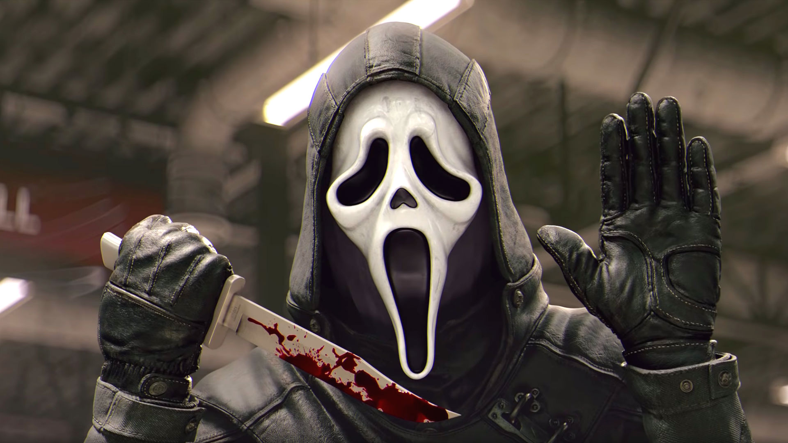
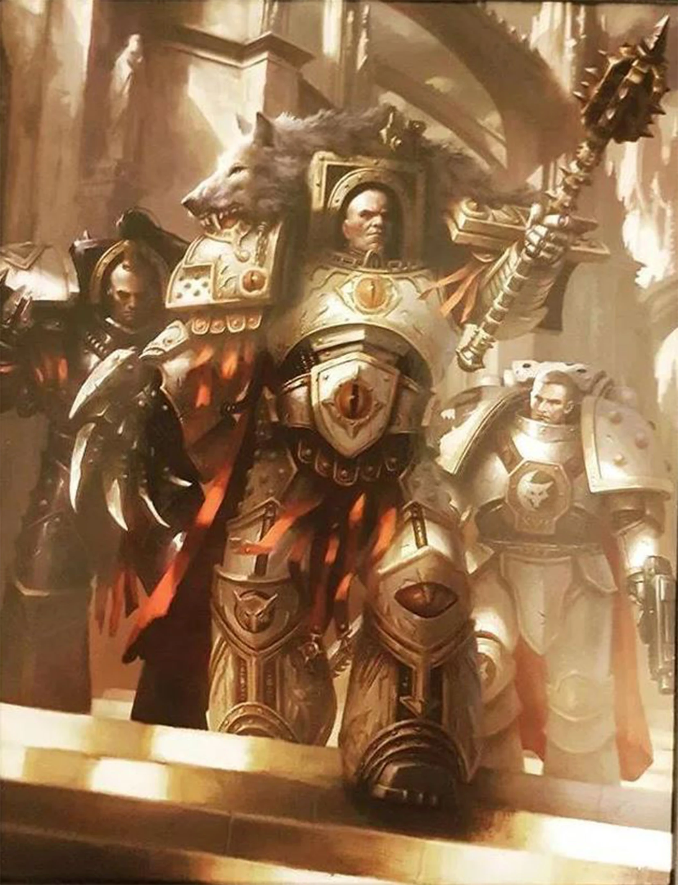

Call of Duty

A Call of Duty egy belső nézetes lövöldözős videójáték-sorozat. A legtöbb rész a második világháborúban,
a hidegháborúban, a modern időkben és a jövőben játszódik. Tulajdonosa és kiadója az Activision. Az
Aspyr Media kizárólag Mac OS X-re adta ki.

Cpt. Price
Cpt. Price
Ő egy brit S.A.S. Kapitány és mesterlövész, aki később a 141-es harci különítményt alakította,
miután részt vett a második orosz polgárháborúban és a harmadik világháborúban..

Simon 'Ghost' Riley
Simon 'Ghost' Riley
Simon "Ghost" Riley hadnagy a brit különleges erők operátora, és a Task Force 141 kiemelkedő
tagja, ikonikus koponyamintás maszkjáról, fejhallgatójáról és sötétvörös napszemüvegéről
ismert.

John 'Soap' MacTavish
John 'Soap' MacTavish
Fontos szerepet játszott az ultranacionalista válság idején, újonc volt a brit különleges
légiszolgálatnál, és tagja volt Price kapitány Bravo csapatának.
World of Warcraft

A World of Warcraft a Blizzard Entertainment 2004-ben megjelent számítógépes játéka. A Battle.net hálózat
része. A nagy sikerű Warcraft sorozat történetét folytatja, pontosan két évvel a Warcraft III: The
Frozen Throne eseményei után kapcsolódik be a történetbe.
Arthas Meethil
Arthas Menethil
Arthas Menethil, Lordaeron koronahercege és az ezüstkéz lovagja II. Terenas Menethil király fia
és a trónörökös volt.
Thrall
Thrall
Thrall (születési nevén Go'el), Durotan és Draka fia, a helyreállított sámánista horda egykori
hadvezére, a kalimdori Durotar nemzet alapítója és a sámánok második hullámának egyike.
Illidan Stormrage
Illidan Stormrage
Illidan Stormrage, az első a démonvadászok közül, az egykori magát Outland
Lordjának kikiáltó lordja, a Fekete Templom egykori uralkodója és az Illidari eredeti vezetője.
Grand Theft Auto

A Grand Theft Auto V egy akció-kaland videójáték, mely 2013. szeptember 17-én jelent meg PlayStation 3 és
Xbox 360 konzolokra. Továbbfejlesztett változata Xbox One, PlayStation 4 platformokra 2014. november
18-án érkezett meg, míg a PC-s verzió többszöri halasztás után 2015. április 14-én jelent meg.
Franklin Clinton
Franklin Clinton
Valamikor fiatalkorában, kezdett el élni egy bandában, és kábítószer-kereskedelemmel
foglalkozott, mindazonáltal hamar letartóztatták.

Michael de Santa
Michael de Santa
Michael háttere pillanatnyilag ismeretlen, de azt mondták, hogy ő valahol a Keleti-partvidéken
élt, és valami történt vele fiatalkorában, amiért bankrabló lett, és éveken keresztül csinálta
és sikeresé vált a munkájában.
Trevor Philips
Trevor Philips
Trevor történetéről nem sokat lehet tudni, de valami pontnál fogva, a 90-es évek elején Trevor
pilótaként belépett a hadseregbe és a 90-es évek végén visszavonult (ekkorra ő a korai 30-as
éveiben volt).
Dead by Daylight

A Dead by Daylight egy online aszimmetrikus túlélési horrorjáték, amelyet a kanadai Behavior Interactive
stúdió fejlesztett ki.
Michael Myers
Michael Myers
Nem volt gondja azzal, hogy mások fájdalmát okozza. Ehelyett pontosan ez volt az, amit keresett.
De még az élet is kemény lehet azoknak, akiknek az elméje rémülettel van tele.

Danny Johnson
Danny Johnson
Lehuppant egy nedves székbe, hogy olvasson. Ez a cikk jobb lenne, ha jó lenne – Roseville-ben
végzett munkája kiemelkedő volt. A SZELLEMARC ELTŰNIK 1993. június 18-án
Tarhos Kovács
Tarhos Kovács
Tarhos Kovács nem sokra emlékezett gyerekkorából, de amire emlékezett, az egész életét kergeti.
Eszébe jutott a falu kiáltása és sikolya.
Warhammer 40000
A Games Workshop gazdag hátteret nyújt a Warhammer 40 000 univerzumában játszódó játékához. A játék
minden egyes modellje a képzeletbeli háttérhez lett igazítva, majd időnként megújítva, de jó néhányszor
már az is előfordult, hogy egy-egy modell többé már nem volt használható a szabályok adta keretek
között. A következő cikk a jelenlegi háttértörténetet mutatja be és azon eseményekre hivatkozik, melyek
a Warhammer 40 000 univerzumában történtek.
Minden dátum a Birodalmi Dátumrendszer szabályai szerint van megadva, melyben a dátumok megadása olyan 3
számjeggyel történik, melyek az évszám utolsó 3 számjegyét jelentik, és aztán jön az ezres. Például
345.M31 a 30345. évet jelenti.
A Warhammer 40k történetéről a könyvekben olvashatsz a leginkább többet. Ehhez tudnám ajánlani a Tuan kiadót.
A Császár
A Császár
A Viszályok Korának vége felé a Császár terrai hadúrként emelkedett föl. Genetikailag módosított
harcosokat alkalmazva egyesítette a Föld egymással viaskodó frakcióit, majd a galaxis
visszahódítására kezdett terveket kovácsolni. Később ezek a harcosok lettek az első Űrgárdisták.
Ebben az időszakban hívták életre a primarchákat.

Hórusz
Hórusz
Hórusz, más néven Horus Lupercal, vagy egyszerűbben Lupercalnak hívták életében a Luna Wolves
Légiójának Astartesei, egyike volt annak a 20 genetikailag módosított primarchának, amelyet az
emberiség császára hozott létre saját DNS-ének megalapítása előtt, még a háború kezdete előtt.
Dorn
Dorn
Rogal Dorn, akit "The Vigilant", a "Terra Praetorianusa" és a "Randhatlan" néven ismertek,
génfiainak pedig a "Defiance" "falneve" volt az Imperial Fists Space Marine primarcha. Légió és
az Emberbirodalom történetének egyik legnagyobb hőse.